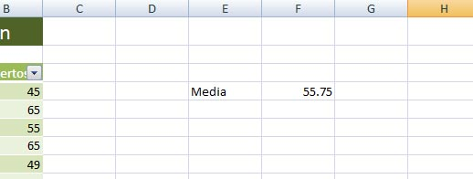
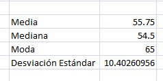

Funciones
Antes de iniciar con los cálculos veremos las definiciones de cada uno de ellos:
Media: Es el promedio aritmético de la distribución.
Mediana: Es el valor que divide la distribución a la mitad. Esto es, la mitad de los casos caen por debajo de la mediana y la otra mitad se ubica por encima de la mediana.
Moda: Categoría o puntuación que se presenta con mayor frecuencia.
Desviación estándar: Es el promedio de desviación de las puntuaciones con respecto a la media.
Fuente:Sampieri, Roberto (2004). Metodología de la Investigación. McGrawHill.
El primer dato estadístico que obtendremos será la Media (promedio). Primero posiciónate en la celda F4 y después escribe los siguiente:
=PROMEDIO(B4:B11)
Como ya sabes, primeramente se debe de escribir el signo igual, después escribimos el nombre de la función, en este caso, PROMEDIO. Después de eso escribimos el rango en el cual se encuentran los datos, en la tabla que tenemos aquí, los datos van desde la celda B4 hasta la B11.
El resultado que aparecerá es 55.7. Escribe la palabra Media en la celda E4 para que la hoja quede como muestra la imagen de abajo:

Ahora realizaremos otros cálculos estadísticos:
- Para calcular la Mediana escribe en la celda F5: =MEDIANA(B4:B11)
- Para calcular la Moda escribe en la celda F6: =MODA.UNO(B4:B11)
- Para calcular la Desviación estándar escribe en la celda F7: =DESVEST(B4:B11)
Escribe los nombres de cada dato para que quede de la siguiente manera:
